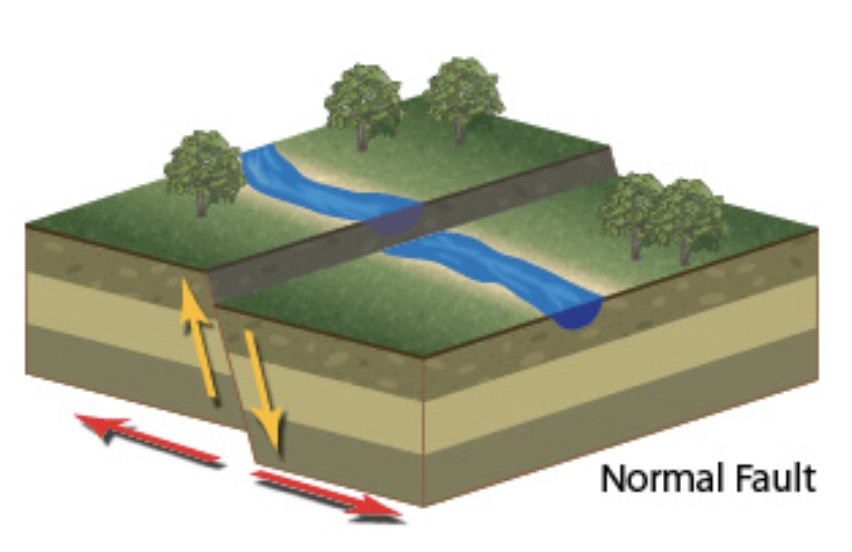
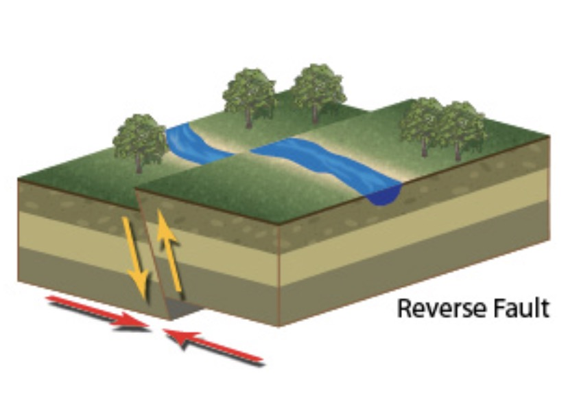
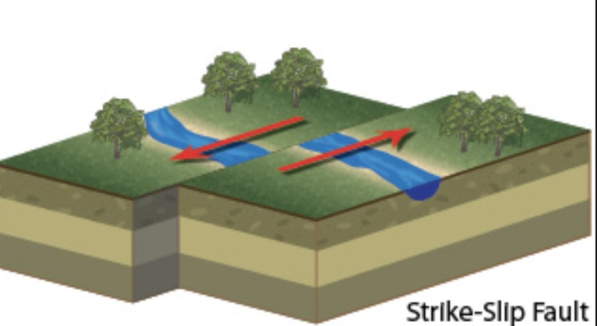

An earthquake is the sudden release of strain energy in the Earth’s crust, resulting in shaking waves that radiate outwards from the earthquake source. An earthquake starts termed the focus or hypocentre and many kilometers deep within the Earth. The point at the surface directly above the focus is called the earthquake epicenter.
When the tectonic plates move against each other, there is a point where they interact. The moment the plates begin to move, the potential energy is released from the hypocenter. The outcome is an earthquake.
Four Different Types of Earthquakes
Tectonic Earthquake
A tectonic earthquake occurs when the earth's crust breaks due to geological forces on rocks and adjoining plates that cause physical and chemical changes.
Volcanic Earthquake
A volcanic earthquake is an earthquake that results from tectonic forces which occur in conjunction with volcanic activity.
Collapse Earthquake
A collapse earthquake is a small earthquake in underground caverns and mines caused by seismic waves produced from rock explosions on the surface.
Explosion Earthquake
An explosion earthquake is an earthquake resulting from the detonation of a nuclear and chemical device.
Earthquake Fault Types
Normal Faults
Normal faults form when the hanging wall drops down. The forces that create normal faults are pulling the sides apart or extensional.
Reverse Faults
Reverse faults form when the hanging wall moves up. The forces creating reverse faults are compressional, pushing the sides together.
Strike-slip faults
Strike-slip faults have walls that move sideways, not up or down.
×

×

×

Earthquakes are unpredictable and can strike with enough force to bring buildings down. Do you know what's behind earthquakes? What can we do to minimize the damage caused by earthquakes? The following video gives a brief introduction to earthquakes.
The following map shows USGS earthquakes recorded between 5/25/2019 - 6/11/2019. The view's extent is set to Japan to show earthquakes recorded in this region.
Since earthquakes are unpredictable, the frequency of past seismic records can be seen. The following map shows 「確率論的地震動予測地図」「長期間平均ハザード」「地震分類別地図」and so on.